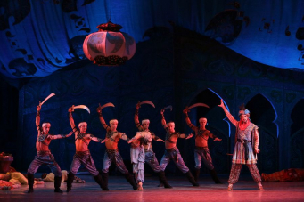

Балетная труппа Мариинского театра выступит с гастролями в Ташкенте
05.04.2023

18 и 19 апреля в Ташкенте состоятся гастроли балетной труппы
Мариинского театра, организованные Благотворительным фондом
«Искусство, наука и спорт» и Фондом развития культуры и искусства
Узбекистана. На сцене ГАБТ им. Алишера Навои пройдут два вечера
одноактных балетов Михаила Фокина. Главные партии в гастрольных
спектаклях исполнят ведущие солисты петербургской труппы.
В программу гастролей вошли знаменитые балеты Михаила Фокина,
созданные для Мариинского театра, его артистов и Русских сезонов
Дягилева. В первом отделении будет представлена «Шопениана» – оммаж
эпохе романтизма с ее «белым балетом», летящими арабесками и
воздушными танцами, – которая впервые была поставлена в Мариинском 115
лет назад, в марте 1908 года. Главные партии в этом легком бессюжетном
балете на музыку Шопена исполнят Мария Ширинкина и Тимур Аскеров.
Продолжат вечер две миниатюры: «Видение розы» на музыку Вебера,
созданное в 1911 году для Русских сезонов и ставшее одним из символов
дягилевской труппы, и знаменитый «Лебедь» на музыку Сен-Санса,
сочиненный для непревзойденной Анны Павловой. В «Видении розы» выйдут
молодые, яркие солисты труппы Камилла Мацци и Раманбек Бейшеналиев, в
роли Лебедя – прима-балерина театра Оксана Скорик.
Завершит вечер легендарная «Шехеразада» на музыку Римского-Корсакова.
В 1910 году премьера этого балета произвела фурор на Русских сезонах в
Париже. Для сегодняшних театралов «Шехеразада» уже стала классикой
балетного репертуара, но ее сочные музыкальные, живописные и
пластические краски до сих пор будоражат воображение чуткого зрителя.
В партии Зобеиды выйдет первая солистка Мариинского театра Кристина
Шапран, а в партии раба Зобеиды – премьер труппы Владимир Шкляров.